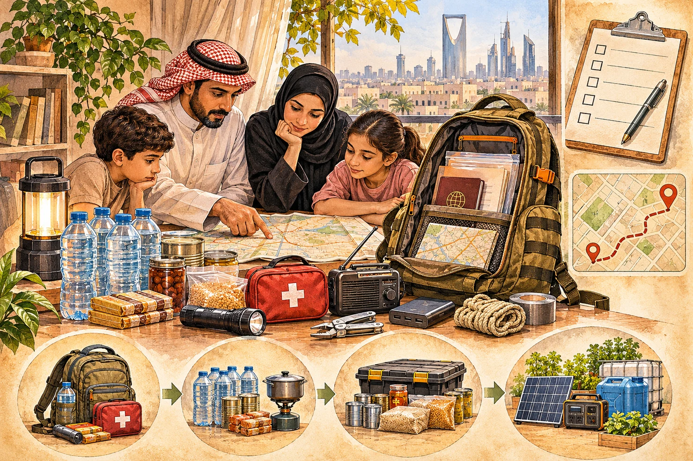
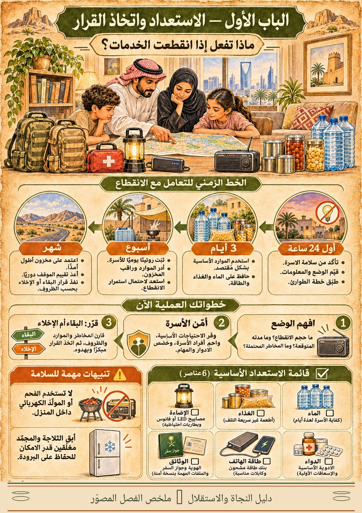
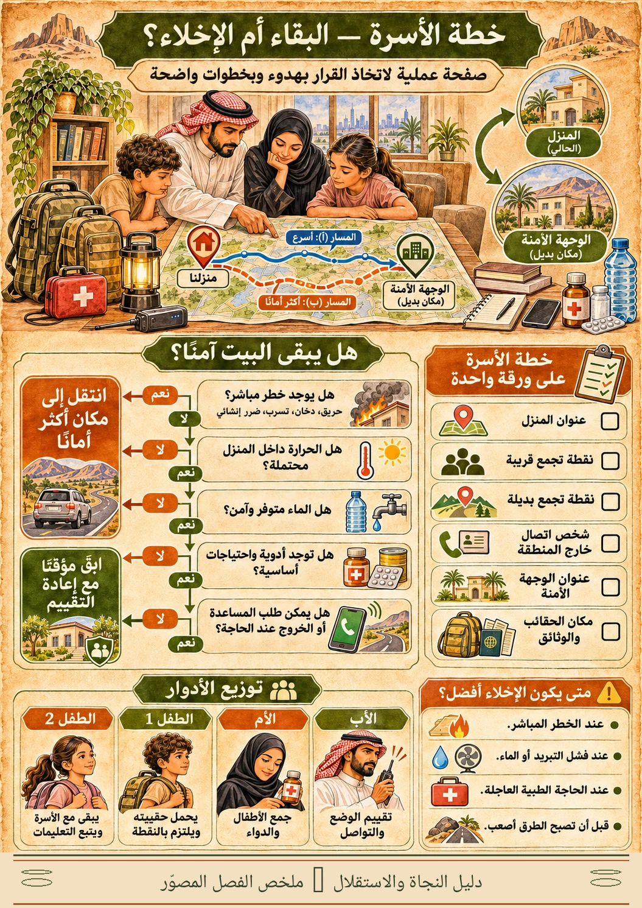
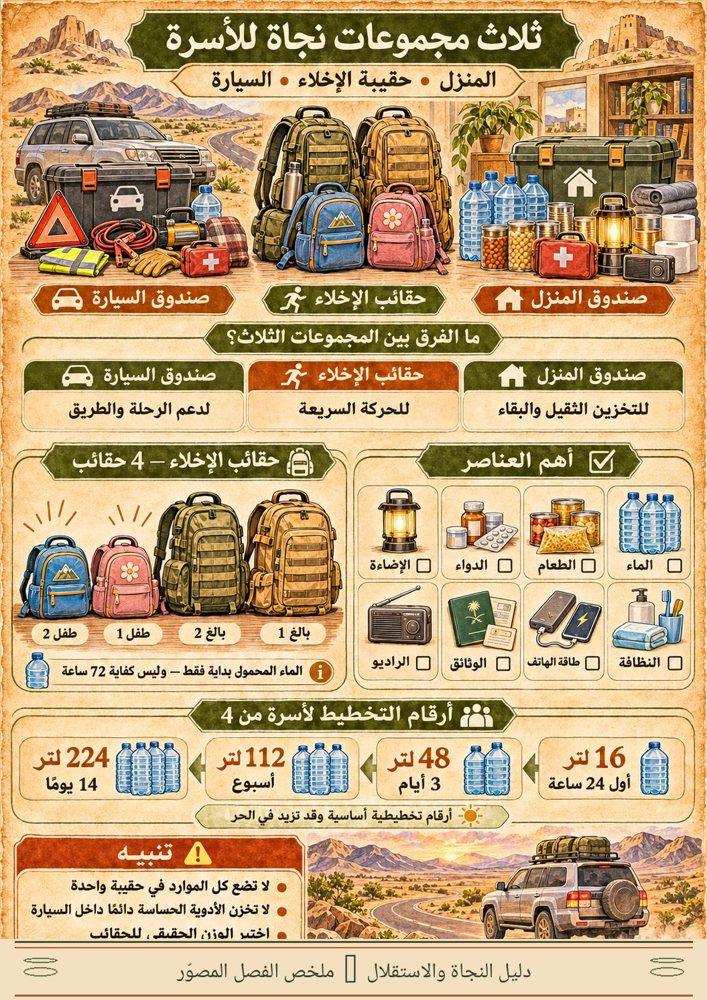
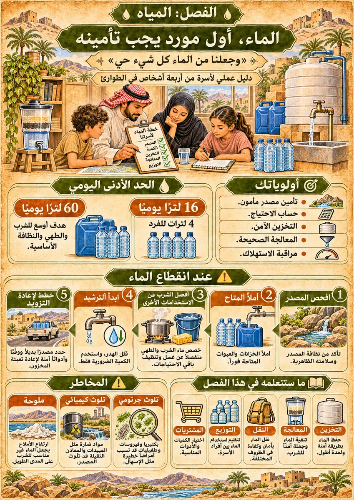
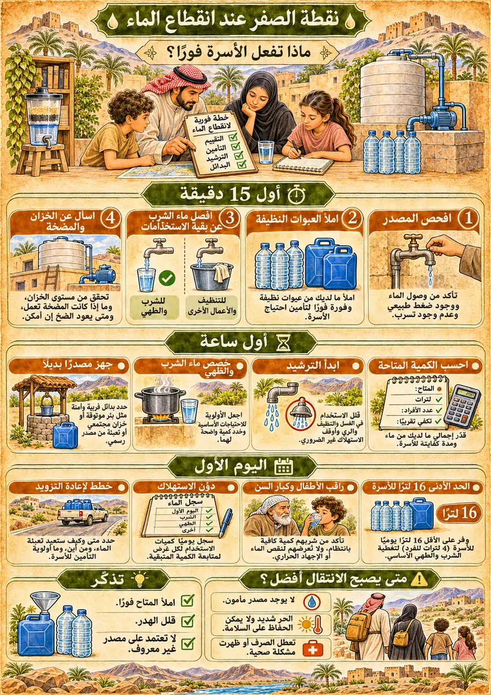
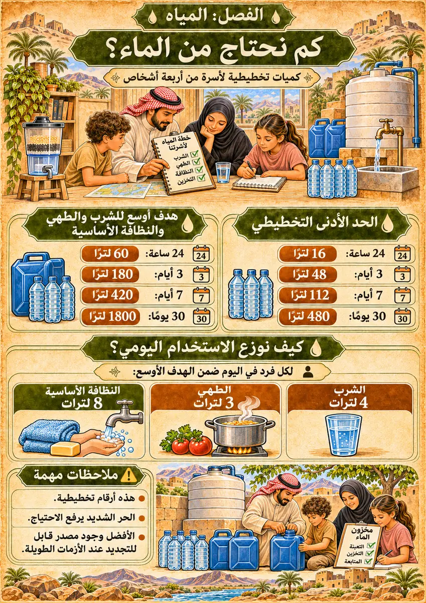
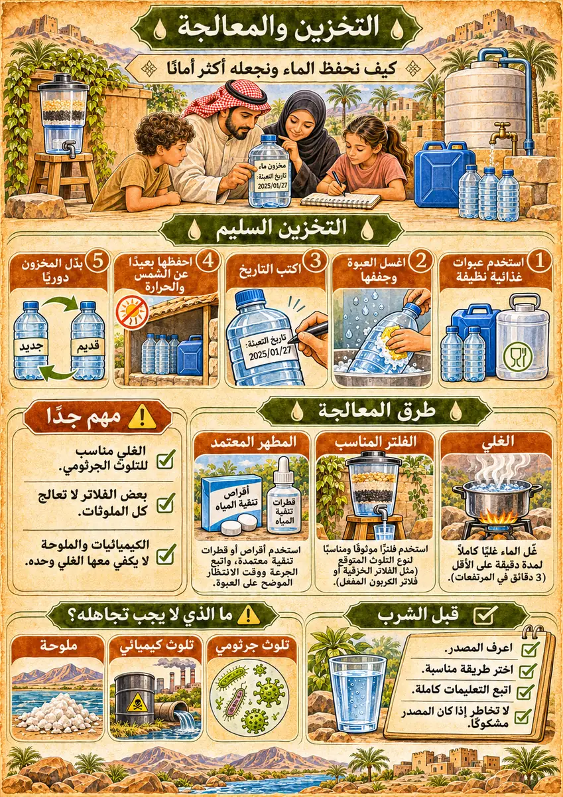
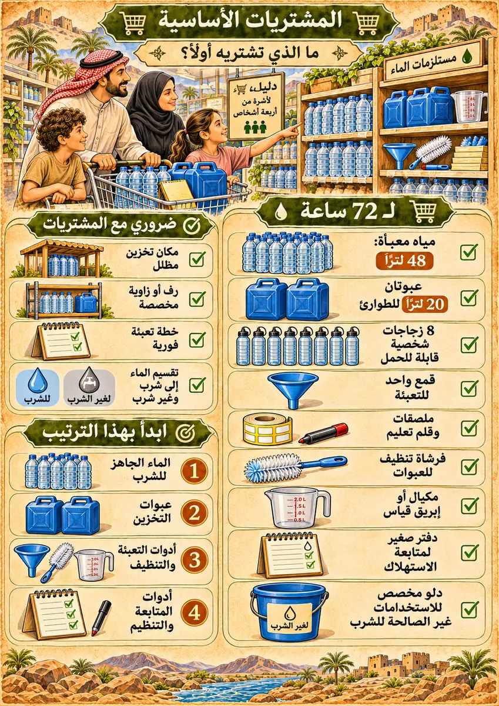
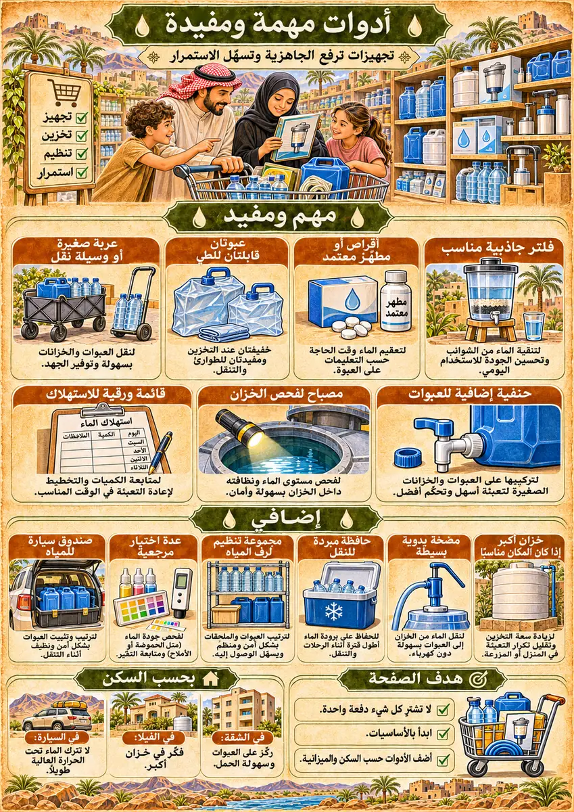

يضم هذا الباب ثلاثة فصول: (1) الاستجابة الأولى، (2) خطة الأسرة واتخاذ القرار، (3) تجهيز حقائب الطوارئ ومخزون المنزل والسيارة. يمكن فتح أي فصل منفردًا، لكن الأفضل إعداد خطة الأسرة قبل شراء المعدات.
الحضارة بلا إنترنت✧الباب الأول · الاستعداد واتخاذ القرار

دليل النجاة والاستقلال · من مشروع إعادة اختراع العجلة
الحضارة
بلا إنترنت
❦
الباب الأول
الاستعداد واتخاذ القرار
حين تنقطع الخدمات، تبقى المعرفة وخطة الأسرة أفضل ما تبدأ به.
دليل مصوّر للاستعداد واتخاذ القرار عند انقطاع الكهرباء والمياه والاتصالات، ضمن مشروع Reinvent the Wheel.
1 / 69
الحضارة بلا إنترنت✧افتتاحية الكتاب
بسم الله الرحمن الرحيم
۞
الحفظ من الله، والاستعداد من الأخذ بالأسباب
من القرآن الكريم
﴿فَاللَّهُ خَيْرٌ حَافِظًا وَهُوَ أَرْحَمُ الرَّاحِمِينَ﴾
سورة يوسف، الآية 64 الآية ومصدرها
من السنة النبوية
«مَنْ أَصْبَحَ مِنْكُمْ آمِنًا فِي سِرْبِهِ، مُعَافًى فِي جَسَدِهِ، عِنْدَهُ قُوتُ يَوْمِهِ، فَكَأَنَّمَا حِيزَتْ لَهُ الدُّنْيَا».
رواه الترمذي (2346)، وحسّنه الألباني. التخريج والتحقق
الأمن والعافية والقوت نعم عظيمة. يشرح هذا الدليل خطوات عملية للتعامل مع فقدان الخدمات، مع مراعاة السلامة وتغير الظروف.
2 / 69
الحضارة بلا إنترنت✧الباب الأول · الاستعداد واتخاذ القرار
كيف تقرأ هذا الدليل
قبل أن تبدأ
❦
كيف تعيش الأسرة بأمان عندما تتعطل الكهرباء أو المياه أو الاتصالات أو الخدمات لفترة غير معروفة؟ هذا الباب لا يفترض أن كل انقطاع يعني كارثة شاملة، بل يعلمك الاستجابة الهادئة، وتقدير المخاطر، واختيار الخطوة التالية.
افتراض الحساب: أسرة مكوّنة من بالغين وطفلين؛ سكن حضري في مناخ حار. تُعدّل الكميات إذا زاد الاستهلاك أو وُجد أطفال صغار أو احتياجات صحية. هذا الكتاب أداة للاستعداد، وليس بديلًا عن تعليمات الجهات المختصة.
3 / 69
الحضارة بلا إنترنت✧تمهيد
تمهيد · شرح عملي مفصل
❧
كيف تستخدم هذا الباب
❦
4 / 69
الحضارة بلا إنترنت✧تمهيد
تمهيد · شرح عملي مفصل
❧
مستويات الاستعداد
❦
ضروري (Must Have)
الحد الأدنى الذي تحتاجه الأسرة لحماية الحياة والصحة.
مهم ومفيد (Good to Have)
يزيد الاعتمادية والقدرة على الاستمرار.
إضافي (Nice to Have)
يحسّن الراحة والمرونة بعد اكتمال الأساسيات.
5 / 69
الحضارة بلا إنترنت✧تمهيد
تمهيد · شرح عملي مفصل
❧
الفترات الزمنية الأربع
❦
أول 24 ساعةتأمين الأشخاص ومعرفة ما يحدث.
أول 3 أيامالصمود مع الخدمات المحدودة.
أول 7 أيامإدارة الاستهلاك والإمدادات.
أول 30 يومًاتجديد الموارد أو الانتقال إلى مكان مناسب. الفترات تراكمية؛ لا تُجمع الكميات المحسوبة لثلاثة أيام إلى كميات الأسبوع لأنها تتضمنها بالفعل.
6 / 69
الحضارة بلا إنترنت✧تمهيد
تمهيد · شرح عملي مفصل
❧
نقطة الصفر · إن انقطعت الكهرباء الآن
❦
7 / 69
الحضارة بلا إنترنت✧الفصل الأول · الاستجابة الأولى
الفصل الأول · اللوحة السريعة
الاستجابة الأولى عند توقف الخدمات
❦

الهدف: خلال الساعات الأولى، تعرف وضع الأسرة، وتمنع المخاطر التي يمكن تجنبها، وتضع خطة لليوم التالي.
8 / 69
الحضارة بلا إنترنت✧الفصل الأول · الاستجابة الأولى
الفصل الأول · شرح عملي مفصل
1.1
بداية السيناريو
❦
استيقظت الأسرة ولم تعمل المكيفات أو الإضاءة. الإنترنت ضعيف، والمصعد متوقف. قد يكون انقطاعًا يستغرق نصف ساعة، وقد يستمر أيامًا. الخطأ الأول هو التعامل معه ككارثة مؤكدة؛ والخطأ الثاني هو تجاهل احتمال أن يمتد. نبدأ بجمع حقائق قليلة وموثوقة ثم نراجع القرار مع تغير الظروف.
9 / 69
الحضارة بلا إنترنت✧الفصل الأول · الاستجابة الأولى
الفصل الأول · شرح عملي مفصل
1.2
أول 15 دقيقة · السلامة قبل كل شيء
❦
أخرج مصباحًا بدل الشموع؛ افحص القواطع الكهربائية فقط إن كانت آمنة ومألوفة؛ لا تلمس أسلاكًا أو لوحات متضررة. تأكد من عدم احتجاز أحد في المصعد. اجمع أفراد الأسرة في غرفة معروفة، وحدد الشخص المسؤول عن كل طفل. تحقق من أي أجهزة طبية تعتمد على الكهرباء وأولوية بطارياتها.
لا تستخدم المصعد، ولا تفتح باب لوحة كهربائية متضررة. عند وجود حريق أو دخان أو تسرب غاز أو مشكلة صحية طارئة، يكون التحرك إلى موقع آمن وطلب النجدة أهم من تقييم سبب انقطاع الكهرباء.
10 / 69
الحضارة بلا إنترنت✧الفصل الأول · الاستجابة الأولى
الفصل الأول · شرح عملي مفصل
1.3
من 15 إلى 60 دقيقة · افهم نطاق الانقطاع
❦
اسأل جارًا أو حارس المبنى، وتابع إعلان الجهة المشغلة إن كانت الشبكة متاحة، واستبعد أن المشكلة محصورة في المنزل دون تعريض نفسك للخطر. تحقق من ضغط المياه، وإمكانية فتح أبواب المداخل يدويًا، والتبريد والتهوية. ابدأ سجلًا ورقيًا: الوقت، الخدمات المتوقفة، درجة الحرارة داخل المنزل، والمعلومات الموثوقة المتاحة.
في السعودية، تُسجل طوارئ الكهرباء عبر 933. وتشير المنصة الوطنية إلى 911 للطوارئ الموحدة، و997 للإسعاف، و998 للدفاع المدني. سجّل الأرقام ورقيًا؛ قد لا تتوافر الشبكة أثناء الأزمة. م6
11 / 69
الحضارة بلا إنترنت✧الفصل الأول · الاستجابة الأولى
الفصل الأول · شرح عملي مفصل
1.4
من ساعة إلى أربع ساعات · احمِ الطعام والبطاريات
❦
قلّل فتح الثلاجة والفريزر. وفق CDC، تبقى المواد المبردة عادة آمنة حتى نحو أربع ساعات في ثلاجة مغلقة، ويُقدّر للفريزر الممتلئ 48 ساعة وللنصف ممتلئ 24 ساعة إذا ظل مغلقًا، وفق الظروف ودرجة الحرارة. استخدم ميزان حرارة إن توفر، ولا تتذوق الطعام لتقرير سلامته. م2
اخفض سطوع شاشة الهاتف وأغلق التطبيقات غير اللازمة. استخدم مصابيح LED. خصص بنك طاقة واحدًا للاتصال والآخر احتياطيًا. إن توقف الماء، لا تهدر المخزون في التنظيف المعتاد، وافصل الشرب والطهي عن المياه المخصصة للأعمال الأخرى.
12 / 69
الحضارة بلا إنترنت✧الفصل الأول · الاستجابة الأولى
الفصل الأول · شرح عملي مفصل
1.5
من 4 إلى 24 ساعة · أعِد تقدير البقاء
❦
احصر كمية الماء الصالح للشرب والطعام الذي لا يحتاج إلى تبريد، والأدوية، وبطاريات الاتصال. تحقق من حرارة الغرف. في الطقس شديد الحرارة لا تفترض أن المروحة وحدها تحمي من المرض الحراري، خاصة إذا وصلت الحرارة الداخلية إلى نحو 32°م أو تجاوزتها. الأطفال وكبار السن وذوو الأمراض المزمنة أكثر عرضة للخطر. م4
كل أربع إلى ست ساعات، أجب كتابة عن: هل المنزل آمن؟ هل الماء مضمون؟ هل يوجد شخص يحتاج تبريدًا أو دواءً عاجلًا؟ هل لدينا معلومات موثوقة عن عودة الخدمات؟ هل الانتقال إلى مكان آخر ما زال آمنًا ومتاحًا؟
13 / 69
الحضارة بلا إنترنت✧الفصل الأول · الاستجابة الأولى
الفصل الأول · شرح عملي مفصل
1.6
بعد يوم، ثم ثلاثة أيام، ثم أسبوع
❦
بعد 24 ساعة: انتقل إلى نظام الاستهلاك المخطط، لا العشوائي. بعد 72 ساعة: افترض أن الشراء والشحن والاتصالات قد تكون أصعب؛ راجع البدائل وخطة التنقل. بعد أسبوع: قيّم مصادر إعادة التزويد بالمياه والطعام والطاقة والصرف الصحي، وتجنب البقاء لمجرد أن لديك مؤنًا إذا أصبح المكان شديد الحرارة أو غير صحي.
14 / 69
الحضارة بلا إنترنت✧الفصل الأول · الاستجابة الأولى
الفصل الأول · شرح عملي مفصل
1.7
علامات تستدعي الخروج فورًا أو طلب المساعدة
❦
حريق أو دخان أو اشتباه تسرب غاز؛ خطر إنشائي؛ غرق أو مياه قرب معدات كهربائية؛ أعراض مرض حراري خطير مثل التشوش أو الإغماء؛ تعذر تلبية حاجة علاجية عاجلة؛ أو تعذر حفظ الأطفال في حرارة آمنة. اتصل بالطوارئ عندما تتوافر الخدمة، وابدأ التبريد والإسعافات الآمنة حسب الحالة.
15 / 69
الحضارة بلا إنترنت✧الفصل الأول · الاستجابة الأولى
الفصل الأول · شرح عملي مفصل
1.8
بطاقة المدة × الأولوية
❦
| المدة | ضروري | مهم ومفيد | إضافي |
|---|---|---|---|
| أول 24 ساعة | 4 مصابيح تعمل، ماء شرب متاح، أرقام طوارئ مكتوبة، خطة تجمع واحدة. | راديو يعمل، مقياس حرارة للغرفة، بنك طاقة مشحون. | جهاز مراقبة لاستهلاك الطاقة. |
| حتى 3 أيام | 48 لتر ماء كحد تخطيطي أساسي للأسرة، 36 حصة وجبة أو ما يعادل احتياجاتها الغذائية، أدوية أساسية، وسائل نظافة. | مخزون طعام لا يحتاج طبخًا، مروحتان USB إن كان الهواء ودرجة الحرارة يسمحان باستخدامهما بأمان. | محطة طاقة صغيرة. |
| حتى 7 أيام | خطة تغطية 112 لتر ماء إجمالًا أو مصدر مضمون، 84 حصة وجبة محسوبة على 3 وجبات يوميًا، فحص يومي للحرارة والصرف. | وسيلة نقل بديلة واتفاق مساعدة مع الجيران. | نظام شحن شمسي مناسب. |
| حتى 30 يومًا | مصدر متجدد وآمن للمياه والطعام والصرف أو خطة انتقال؛ 480 لترًا تمثل الحد الأساسي النظري للمياه إذا لم تتوافر إعادة تزويد، وغالبًا يصعب تخزينها في شقة. | شبكة دعم محلية وتنظيم استخدام الموارد. | منظومة طاقة مستقلة بعد دراسة السلامة. |
16 / 69
الحضارة بلا إنترنت✧الفصل الأول · الاستجابة الأولى
الفصل الأول · شرح عملي مفصل
1.9
تمرين منزلي لمدة 20 دقيقة
❦
17 / 69
الحضارة بلا إنترنت✧الفصل الثاني · خطة الأسرة
الفصل الثاني · اللوحة السريعة
خطة الأسرة وقرار البقاء أو الإخلاء
❦

الهدف: لا يحتار أحد من أفراد الأسرة بشأن المكان أو الأدوار أو طريقة الوصول للآخرين عند انقطاع الاتصال.
18 / 69
الحضارة بلا إنترنت✧الفصل الثاني · خطة الأسرة
الفصل الثاني · شرح عملي مفصل
2.1
ضع خطة على ورقة واحدة
❦
أفضل خطة هي التي يمكن لطفل فهمها، ويمارسها الكبار قبل الأزمة. اكتب عنوان المنزل ووصفه، موقعين للتجمع، شخص اتصال خارج المنطقة، مدرستَي الطفلين إن وجدت، احتياجات طبية مهمة، وطريقين للوصول إلى الوجهة البديلة. احتفظ بنسخة قرب الباب، وأخرى في كل حقيبة مناسبة.
19 / 69
الحضارة بلا إنترنت✧الفصل الثاني · خطة الأسرة
الفصل الثاني · شرح عملي مفصل
2.2
وزّع المسؤوليات دون تحميل الأطفال أدوارًا خطرة
❦
البالغ الأول: تقييم المكان والمخاطر، التواصل مع الجهات المختصة، متابعة المياه والطاقة. البالغ الثاني: جمع الأطفال، الأدوية والوثائق، والتأكد من العدد قبل التحرك. لكل طفل: ارتداء الحذاء، حمل حقيبته الخفيفة، والاتجاه إلى نقطة تجمع محددة. لا يُطلب من الأطفال التعامل مع النار أو الوقود أو الكهرباء أو مغادرة مكان آمن بمفردهم.
20 / 69
الحضارة بلا إنترنت✧الفصل الثاني · خطة الأسرة
الفصل الثاني · شرح عملي مفصل
2.3
اختَر نقطتي تجمع
❦
النقطة (أ): مكان قريب وآمن خارج المبنى، بعيد عن الواجهات والزجاج وحركة المركبات، يستخدم عند إخلاء منزل سريع. النقطة (ب): موقع معروف خارج الحي أو في منطقة أكثر أمانًا إذا تعذر العودة إلى المنزل. لا تختَر طريقًا واحدًا فقط؛ قد يكون الشارع مغلقًا أو غير صالح للمرور.
21 / 69
الحضارة بلا إنترنت✧الفصل الثاني · خطة الأسرة
الفصل الثاني · شرح عملي مفصل
2.4
خطة الاتصال دون شبكة
❦
عيّن شخصًا خارج المنطقة يمكنه نقل الأخبار إن كان الاتصال متاحًا لديه. اكتب رقمين بديلين وعنوانه. اتفقوا: إذا لم يعمل الاتصال، لا ينتقل كل فرد إلى نقطة مختلفة؛ تُتبع نقاط التجمع وترتيب الأولويات الذي حفظه الجميع. قدّم رسائل قصيرة عند عمل الشبكة لتقليل استهلاك البطارية.
22 / 69
الحضارة بلا إنترنت✧الفصل الثاني · خطة الأسرة
الفصل الثاني · شرح عملي مفصل
2.5
إذا كان الأطفال في المدرسة
❦
سجل عنوان المدرسة ورقمها وخطة تسليم الأطفال المعتمدة لديها. حدّد مسبقًا من المخول باستلام كل طفل، وماذا يحدث إن تعطل الهاتف أو ازدحمت الطرق. لا تفترض أن الذهاب إلى المدرسة فورًا هو دائمًا الخيار الآمن؛ اتبع تعليمات السلامة المحلية وسياسة المدرسة، مع وجود بديل واضح إذا لم تصل الرسائل.
23 / 69
الحضارة بلا إنترنت✧الفصل الثاني · خطة الأسرة
الفصل الثاني · شرح عملي مفصل
2.6
قائمة التقييم للبقاء
❦
إذا فشلت نقطة حرجة مثل السلامة الإنشائية أو الحاجة الطبية أو الإجهاد الحراري، فلا تنتظر نفاد المخزون. إذا كانت النقاط كلها مقبولة لكن حالة الخدمات غير معروفة، فابق مؤقتًا مع موعد محدد لإعادة التقييم.
24 / 69
الحضارة بلا إنترنت✧الفصل الثاني · خطة الأسرة
الفصل الثاني · شرح عملي مفصل
2.7
متى يكون الإخلاء أفضل؟
❦
اخرج فورًا في خطر مباشر، أو اتبع أوامر الإخلاء الرسمية. فكر في الانتقال المخطط قبل أن تصبح الظروف غير محتملة إذا تعطل الماء أو الصرف، أو استمر فقد التبريد خلال الحر، أو تناقصت الأدوية، أو انخفض الوقود مع احتمال إغلاق الطرق. غالبًا يكون الانتقال المبكر والمنظم أفضل من الخروج بعد الإنهاك والجفاف.
25 / 69
الحضارة بلا إنترنت✧الفصل الثاني · خطة الأسرة
الفصل الثاني · شرح عملي مفصل
2.8
كيف تختار وجهة بديلة؟
❦
قيّم الوجهة على خمسة أسس: (1) حرارة ومأوى آمنان، (2) مياه وصرف، (3) إمكان الوصول حاليًا، (4) إمكان التواصل أو وجود شخص معروف، (5) احتياجات الأطفال والعلاج. لا تفترض أن الفندق أو محطة الوقود أو الطريق السريع سيعمل وقت الانقطاع الشامل.
26 / 69
الحضارة بلا إنترنت✧الفصل الثاني · خطة الأسرة
الفصل الثاني · شرح عملي مفصل
2.9
بطاقة المدة × الأولوية
❦
| المدة | ضروري | مهم ومفيد | إضافي |
|---|---|---|---|
| أول 24 ساعة | تحديد المسؤول عن الطفلين ونقطة تجمع قريبة، وبطاقات اتصال لأربعة أشخاص. | نسختان من الخطة والوثائق المهمة. | سجل رقمي مشفر للخطة. |
| حتى 3 أيام | وجهة بديلة وعنوانها وطريقان إليها، 4 حقائب يمكن حملها. | تجربة السير إلى نقطة التجمع. | أجهزة اتصال قصيرة المدى وفق الأنظمة. |
| حتى 7 أيام | خطة بديلة إذا تعطلت الطرق أو المدارس أو الشبكات، وتحديث احتياجات الطفلين. | تواصل منظم مع الجيران. | خرائط تفصيلية ورقية إضافية. |
| حتى 30 يومًا | مكان إقامة طويل نسبيًا تتوافر فيه المياه والصحة والسلامة أو خطة مورد مستدام. | اتفاقات مساعدة مع الأقارب والجيران. | مكتبة تعليمية بلا إنترنت للأطفال. |
27 / 69
الحضارة بلا إنترنت✧الفصل الثاني · خطة الأسرة
الفصل الثاني · شرح عملي مفصل
2.10
نموذج خطة الأسرة · املأه بالقلم
❦
عنوان المنزل / وصف المدخل:
نقطة التجمع (أ) القريبة:
نقطة التجمع (ب) البديلة:
الشخص المسؤول عن الطفلين عند الخروج:
جهة اتصال خارج المنطقة + هاتف بديل:
عنوان وجهة آمنة أولى / ثانية:
دواء أو احتياج صحي لا يمكن تأجيله:
مكان الحقائب والمياه والوثائق:
تاريخ آخر تدريب ومراجعة:
28 / 69
الحضارة بلا إنترنت✧الفصل الثاني · خطة الأسرة
الفصل الثاني · شرح عملي مفصل
2.11
تدريب الخمس دقائق
❦
ابدأ بجملة متفق عليها تعني «إخلاء تجريبي الآن». يلتقط كل شخص حقيبته وحذاءه، ويصل الجميع إلى الباب أو نقطة آمنة محددة، دون الركض أو استخدام المصعد. يتحقق البالغان من العدد والدواء والوثائق ثم يسجلان الزمن والعقبات. أعِد التدريب بعد معالجة العقبات.
29 / 69
الحضارة بلا إنترنت✧الفصل الثالث · تجهيزات الطوارئ
الفصل الثالث · اللوحة السريعة
مجموعات النجاة الثلاث
❦

الهدف: معدات قابلة للاستخدام فعلًا، لا مشتريات متراكمة لا يعرف أحد مكانها أو طريقة تشغيلها.
30 / 69
الحضارة بلا إنترنت✧الفصل الثالث · تجهيزات الطوارئ
الفصل الثالث · شرح عملي مفصل
3.1
لا تضع كل الموارد في حقيبة واحدة
❦
صندوق المنزل يسمح بالتخزين الثقيل، مثل الماء والطعام لمدة 14 يومًا. حقيبة الإخلاء خفيفة للانتقال السريع، ولا تستطيع حمل احتياجات الأسرة من الماء لثلاثة أيام في الأجواء الحارة. صندوق السيارة دعم أثناء السفر، وليس مكانًا مناسبًا للتخزين الدائم للأدوية والبطاريات والطعام سريع التلف بسبب الحرارة.
31 / 69
الحضارة بلا إنترنت✧الفصل الثالث · تجهيزات الطوارئ
الفصل الثالث · شرح عملي مفصل
3.2
الأرقام المرجعية لأسرة من أربعة
❦
مخزون الماء
- أول 24 ساعة16 لترًا
- 3 أيام48 لترًا
- 7 أيام112 لترًا
- 14 يومًا224 لترًا
- 30 يومًا480 لترًا
الحساب مبني على نحو 4 لترات للفرد يوميًا. هذه كميات تخطيطية للشرب وإعداد الطعام والعناية المحدودة، ولا تكفي بالضرورة للغسل والمرحاض أو في الحر الشديد. وزن 224 لترًا من الماء يقارب 224 كجم دون العبوات، لذلك يجب مراعاة سلامة مكان التخزين.
حصص الطعام للأسرة
- يوم واحد12 حصة وجبة
- 3 أيام36 حصة وجبة
- 7 أيام84 حصة وجبة
- 14 يومًا168 حصة وجبة
- 30 يومًا360 حصة وجبة
العدد يفترض ثلاث وجبات لكل شخص يوميًا. العدد وحده لا يضمن السعرات أو العناصر الغذائية المناسبة، لذلك تُراجع احتياجات كل فرد وعمره وحالته الصحية.
32 / 69
الحضارة بلا إنترنت✧الفصل الثالث · تجهيزات الطوارئ
الفصل الثالث · شرح عملي مفصل
3.3
صندوق المنزل · الضروري أولًا
❦
33 / 69
الحضارة بلا إنترنت✧الفصل الثالث · تجهيزات الطوارئ
الفصل الثالث · شرح عملي مفصل
3.4
صندوق المنزل · مفيد ثم إضافي
❦
مهم ومفيد: مقياس حرارة للغرفة، مقياس حرارة للثلاجة، عبوتان طعاميتان للمياه كل منهما 20 لترًا، وسيلة آمنة لمعالجة الماء عند الحاجة، مستلزمات تنظيف إضافية، ووسيلة تبريد لا تعتمد على افتراض أن المروحة تكفي. إضافي: محطة طاقة مع لوح شمسي مناسبين ومثبتين بأمان، معدات طهي مستقلة للاستخدام الخارجي فقط، ومكتبة دليل مطبوعة ورقمية.
34 / 69
الحضارة بلا إنترنت✧الفصل الثالث · تجهيزات الطوارئ
الفصل الثالث · شرح عملي مفصل
3.5
حقائب الإخلاء · أربع حقائب لا حقيبة واحدة
❦
حضّر حقيبتين للبالغين وحقيبتين خفيفتين للطفلين. تتوزع الاحتياجات الأساسية بين الحقائب بحيث لا يضيع كل شيء إذا انفصلت حقيبة. يجب تجربة الوزن والسير بها، ولا يُطلب من طفل حمل حمولة تؤثر في سلامته أو قدرته على الحركة.
35 / 69
الحضارة بلا إنترنت✧الفصل الثالث · تجهيزات الطوارئ
الفصل الثالث · شرح عملي مفصل
3.6
كميات الماء في الحقائب ليست مخزون منزل
❦
36 / 69
الحضارة بلا إنترنت✧الفصل الثالث · تجهيزات الطوارئ
الفصل الثالث · شرح عملي مفصل
3.7
صندوق السيارة · متى يفيد وماذا نحذر؟
❦
في السيارة: خريطة ورقية، حقيبة إسعاف مناسبة، مصباح، سترة عاكسة، أدوات سيارة أساسية متوافقة مع المركبة، وسيلة شحن للهاتف، نسخ اتصال طوارئ، ومستلزمات انتقال قصيرة. احتفظ بالمياه والأدوية والأغذية الحساسة للحرارة ضمن خطة تُنقل من المنزل عند السفر بدل تركها شهورًا داخل سيارة شديدة السخونة.
37 / 69
الحضارة بلا إنترنت✧الفصل الثالث · تجهيزات الطوارئ
الفصل الثالث · شرح عملي مفصل
3.8
قائمة الأولويات الشرائية
❦
المستوى الأول · ضروري
ابدأ بالماء والغذاء غير المبرد، والإضاءة، والدواء، والراديو، وخطة الأسرة، والوثائق، والحقائب. لا تشترِ أجهزة متقدمة قبل أن تُغلق هذه الفجوات الأساسية.
المستوى الثاني · مهم ومفيد
أضف مستلزمات الصرف والنظافة، ومخزونًا أطول، وقياس الحرارة، ووسائل إضافية للشحن والملاحة، واختبار الانتقال والتعبئة.
المستوى الثالث · إضافي
فكّر في منظومة طاقة محمولة، ومكتبة SurvivalBox دون إنترنت، وخرائط GPS احتياطية، وأدوات إصلاح متقدمة بعد حساب التكلفة والموثوقية والصيانة.
38 / 69
الحضارة بلا إنترنت✧الفصل الثالث · تجهيزات الطوارئ
الفصل الثالث · شرح عملي مفصل
3.9
بطاقة المدة × الأولوية
❦
| المدة | ضروري | مهم ومفيد | إضافي |
|---|---|---|---|
| أول 24 ساعة | ماء 16 لترًا بالمنزل و12 حصة وجبة مع إضاءة واتصال. | بنكا طاقة وراديو. | شاحن شمسي صغير. |
| حتى 3 أيام | ماء 48 لترًا و36 حصة وجبة، 4 حقائب جاهزة، 4 وسائل إضاءة. | مؤن سهلة الأكل وآلية بسيطة للنظافة. | محطة طاقة 1–2 kWh إذا كانت آمنة ومناسبة. |
| حتى 7 أيام | ماء 112 لترًا أو مورد مأمون مكافئ، 84 حصة وجبة، خطة دواء وصرف. | وسائل إعادة تزويد وعلاقات دعم محلية. | نظام شحن إضافي. |
| حتى 30 يومًا | إمداد مستدام قابل للتحقق أو قرار انتقال، مع حساب 480 لترًا و360 حصة وجبة كمرجع تخطيطي لا كمتطلبات حمل. | صيانة وتناوب المخزون. | نظام مستقل للطاقة والمعلومات. |
39 / 69
الحضارة بلا إنترنت✧الفصل الثالث · تجهيزات الطوارئ
الفصل الثالث · شرح عملي مفصل
3.10
أين تخزّن ومتى تراجع؟
❦
احتفظ بصندوق المنزل في موقع جاف يسهل الوصول إليه، بعيدًا عن الشمس والحرارة. تُعلّق حقائب الإخلاء في مكان معروف قرب طريق خروج آمن، ولا تسد الأبواب. افحص التواريخ والبطاريات والملابس كل ستة أشهر، وبعد كل استخدام، وعند تغير احتياجات الطفلين.
40 / 69
الحضارة بلا إنترنت✧الفصل الثالث · تجهيزات الطوارئ
الفصل الثالث · شرح عملي مفصل
3.11
تجربة عملية: عشر دقائق للخروج
❦
41 / 69
الحضارة بلا إنترنت✧الفصل الرابع · الماء
الباب الثاني · أساسيات البقاء
الفصل الرابع: الماء، أول مورد يجب تأمينه
❦

ماذا تفعل إذا جف الصنبور أو توقفت مضخة المبنى؟ كيف توفر الماء لأربعة أشخاص اليوم، وتدير احتياجات أسبوع أو شهر؟ هذا الفصل مخصص للقرار السريع، ثم للتجهيز والتخزين والمعالجة الآمنة.
16 لترًاحد تخطيطي أساسي في اليوم للأسرة
48 لترًامخزون 72 ساعة
60 لترًاهدف أوسع يوميًا للنظافة الأساسية
42 / 69
الحضارة بلا إنترنت✧الفصل الرابع · الماء
أولًا · تصرف الآن
نقطة الصفر عند انقطاع المياه
❦

43 / 69
الحضارة بلا إنترنت✧الفصل الرابع · الماء
4.1 · أول ساعة
4.1
احسب المتاح وحدد موعد إعادة التقييم
❦
المتاحكم لترًا من ماء الشرب المأمون لديك؟
الطلبعدد أفراد الأسرة واحتياجهم اليومي
الفجوةالأيام التي سيكفيها المخزون
اجمع أحجام الزجاجات والعبوات النظيفة. احسب عدد الأيام بقسمة كمية الماء الصالح للشرب على الحد التخطيطي اليومي للأسرة. إذا كان لديك 48 لترًا، فهذا يعادل 3 أيام عند 16 لترًا يوميًا، وليس كل مياه الاستحمام والمرحاض.
- اكتب في سجل: التاريخ، عدد اللترات، مصدرها، وما إذا كانت صالحة للشرب.
- استخدم أولًا العبوات التي اقترب موعد صلاحيتها، بشرط سلامتها.
- ضع موعدًا لإعادة تقييم الحرارة، ومدى القدرة على الحصول على ماء جديد.
44 / 69
الحضارة بلا إنترنت✧الفصل الرابع · الماء
4.2 · الحسابات
4.2
كم نحتاج من المياه؟
❦

4 لتراتحد أساسي تقريبي للفرد يوميًا
15 لترًاهدف أوسع للفرد يشمل النظافة الأساسية
45 / 69
الحضارة بلا إنترنت✧الفصل الرابع · الماء
4.2 · جدول التخطيط
4.2
مخزون 24 ساعة و3 أيام وأسبوع وشهر
❦
| المدة | المخزون الأساسي (4 لترات للفرد/يوم) | الهدف الأوسع (15 لترًا للفرد/يوم) |
|---|---|---|
| يوم واحد | 16 لترًا | 60 لترًا |
| 3 أيام | 48 لترًا | 180 لترًا |
| 7 أيام | 112 لترًا | 420 لترًا |
| 14 يومًا | 224 لترًا | 840 لترًا |
| 30 يومًا | 480 لترًا | 1,800 لتر |
الهدف الأساسي قريب من توصية توفير غالون أمريكي واحد للشخص يوميًا كمخزون للطوارئ. أما 15 لترًا للفرد يوميًا فهو هدف خدمة إنسانية أوسع للشرب والطهي والنظافة الأساسية، وليس أمرًا بأن يشرب الشخص 15 لترًا.
46 / 69
الحضارة بلا إنترنت✧الفصل الرابع · الماء
4.3 · فهم المنزل
4.3
من أين يصل الماء إلى الصنبور؟
❦
المصدر العام أو شاحنة التزويد
←الخزان الأرضي
←المضخة الكهربائية
←الخزان العلوي أو شبكة الضغط
←الحنفيات
ليس كل مبنى يستخدم كل هذه الأجزاء، لكن كثيرًا من المباني تعتمد على مضخات كهربائية. قد تكون المياه موجودة في الخزان الأرضي رغم أن الحنفيات جافة بسبب توقف المضخة.
47 / 69
الحضارة بلا إنترنت✧الفصل الرابع · الماء
4.4 · مصادر المياه
4.4
اختر المصدر بحسب الثقة لا المظهر
❦
أفضل خيار
- مياه معبأة ومحكمة من مصدر معروف
- ماء شبكة موثوق إذا لم تصدر تحذيرات وكانت منظومته سليمة
مصادر تحتاج تقييمًا
- خزانات المبنى التي لا تعرف تاريخ صيانتها
- آبار أو خزانات خاصة أو حصاد المطر
- مصادر سطحية قد تتعرض للتلوث
عند فقدان المصادر المأمونة، ركز على طلب إعادة تزويد من جهة موثوقة أو الانتقال إلى موقع به مياه مأمونة بدل التجربة على مصادر شديدة الخطورة.
48 / 69
الحضارة بلا إنترنت✧الفصل الرابع · الماء
4.5 · التخزين
4.5
التخزين والمعالجة في لوحة واحدة
❦

49 / 69
الحضارة بلا إنترنت✧الفصل الرابع · الماء
4.5 · التنظيف والتخزين
4.5
كيف تجهّز عبوات مياه الشرب؟
❦
- اختر عبوة مخصصة للمياه أو صالحة للتلامس مع الغذاء، بغطاء محكم ومن خامة متينة.
- لا تعِد استخدام وعاء سبق أن احتوى وقودًا أو مبيدًا أو مادة كيميائية سامة، حتى لو غُسل.
- اغسل الوعاء بالصابون والماء، واشطفه تمامًا.
- عند الحاجة لتعقيم العبوة قبل تعبئتها، اتبع بروتوكول CDC: محلول تعقيم من ملعقة شاي واحدة من مبيض كلور منزلي غير معطر بتركيز 5% إلى 9% في قرابة لتر ماء، يُلامس جميع الأسطح الداخلية 30 ثانية على الأقل، ثم يُفرغ ويُترك الوعاء ليجف في الهواء. هذا لتعقيم الوعاء، وليس جرعة تطهير ماء الشرب.
- املأ العبوة بماء مأمون، أغلقها، واكتب تاريخ الملء والغرض منها.
خزن العبوات في موضع بارد نسبيًا وبعيد عن الشمس والوقود والمبيدات. يُستبدل الماء الذي عبأته منزليًا كل ستة أشهر، بينما تُراعى صلاحية المياه التجارية وتعليمات عبواتها.
50 / 69
الحضارة بلا إنترنت✧الفصل الرابع · الماء
4.6 · المعالجة
4.6
قبل الشرب: فرّق بين أنواع التلوث
❦
تلوث جرثومي
- قد تنفع طرق الغلي أو التطهير المناسبة
- تتحدد فعالية المرشح حسب مواصفاته والجراثيم المستهدفة
تلوث كيميائي أو ملوحة
- لا يكفي الغلي أو تطهير الكلور لعلاج السموم والوقود
- قد تتطلب الأملاح والمعادن طرقًا متخصصة واختبارًا للماء
المصدر معروف ومأمون؟
←نعم: خزن واستخدم بأمان
| لا: تحقق من نوع الخطر قبل المعالجة
51 / 69
الحضارة بلا إنترنت✧الفصل الرابع · الماء
4.7 · الغلي
4.7
كيف تُغلي مياهًا يُحتمل تلوثها بالجراثيم؟
❦
- إذا كانت المياه عكرة، اتركها تترسب أو صفّها بقطعة قماش نظيفة للتخلص من الجزيئات الظاهرة. هذه ليست مرحلة تطهير.
- ارفع الماء الصافي إلى غليان متدحرج واضح واستمر دقيقة واحدة. على ارتفاعات تفوق 1,981 مترًا تقريبًا، استمر ثلاث دقائق.
- اترك الماء يبرد في وعاء نظيف ومغطى.
- خزن الماء المُعالَج في عبوة نظيفة معقمة ومحكمة.
إن لم تتوافر وسيلة طبخ آمنة أو كان المصدر مشكوكًا في تلوثه الكيميائي، استعمل المياه المعبأة أو مصدرًا بديلًا مأمونًا.
52 / 69
الحضارة بلا إنترنت✧الفصل الرابع · الماء
4.8 · الفلترة والتطهير
4.8
متى يفيد المرشح أو المطهر؟
❦
| الوسيلة | ما تفعله عادة | الحدود المهمة |
|---|---|---|
| مرشح محمول مناسب | قد يزيل الجسيمات والطفيليات، وقد يزيل أنواعًا من البكتيريا حسب التصنيف | ليس كل مرشح يزيل الفيروسات أو المواد الكيميائية أو الأملاح |
| مطهر مياه معتمد | يستهدف جراثيم محددة وفق نوع المادة وتركيزها ووقت الملامسة | لا يصلح لكل الطفيليات، ولا للوقود أو المذيبات أو الملوحة |
| الغلي | فعال ضد بكتيريا وفيروسات وطفيليات كثيرة | لا يزيل السموم الكيميائية أو الأملاح |
في استخدام الأقراص أو القطرات المخصصة لمياه الشرب، اتبع مقدار الماء والجرعة ومدة الانتظار الموضحة على الملصق، وتأكد من تاريخ الصلاحية. تختلف المادة والتركيز من منتج لآخر.
53 / 69
الحضارة بلا إنترنت✧الفصل الرابع · الماء
4.9 · الاستهلاك
4.9
قسّم المياه بحسب أولوية الاستخدام
❦
- احتفظ بمخزون مخصص للشرب وترطيب الجسم والتعامل مع مخاطر الحر، ولا تخفّضه إلى درجة تعرض الأسرة للجفاف.
- احجز الماء الكافي للطعام، وتحضير حليب الأطفال أو الأدوية إن لزم باستخدام ماء مأمون.
- خصص ماءً مناسبًا للنظافة الأساسية وغسل اليدين.
- استخدم ماءً غير مخصص للشرب لأعمال تنظيف محددة فقط إذا كان نوع التلوث لا يجعل ملامسته خطرة.
- سجّل كل تعبئة واستهلاك، وقارن الكمية المتبقية بمعدل الاحتياج التالي.
لا تتعامل مع الأرقام التخطيطية بوصفها برنامج تقنين ثابتًا للشرب. يحتاج الشخص إلى كمية تتغير بحسب الحرارة والنشاط والحالة الصحية، ويجب إعطاء الأولوية للسلامة.
54 / 69
الحضارة بلا إنترنت✧الفصل الرابع · الماء
4.10 · النقل
4.10
نقل المياه أثناء الإخلاء
❦
1 لتروزنه يقارب 1 كجم
20 لترًاحاوية واحدة تزن نحو 20 كجم دون الوعاء
8 لتراتإجمالي ثماني زجاجات للحمل الأولي
لا تطلب من الطفل حمل كمية ماء تؤثر في قدرته على الحركة. يُفضّل توزيع الزجاجات بين البالغين، والاستفادة من سيارة أو عربة مناسبة عندما يكون ذلك آمنًا. احسب مياه الطريق واحتمال التأخر ولا تفترض وجود محطة تعبئة.
55 / 69
الحضارة بلا إنترنت✧الفصل الرابع · الماء
4.11 · مشتريات ضرورية
4.11
قائمة الشراء الأساسية لثلاثة أيام
❦

56 / 69
الحضارة بلا إنترنت✧الفصل الرابع · الماء
4.11 · مشتريات ضرورية
4.11
مشتريات المرحلة الأولى: 72 ساعة
❦
مهم: لا يُعد شراء حاويتين فارغتين سعة 20 لترًا بديلًا عن مخزون 48 لترًا جاهزًا. الحاويات الإضافية تزيد سعة الجمع أو النقل بعد تعبئتها بمصدر مأمون.
57 / 69
الحضارة بلا إنترنت✧الفصل الرابع · الماء
4.12 · معدات تخزين
4.12
مشتريات مفيدة لتجهيز المنزل
❦
هذه العناصر تسهّل الجمع والنقل وإدارة الكمية، لكنها لا تُغني عن مياه مأمونة ومجهزة مسبقًا.
58 / 69
الحضارة بلا إنترنت✧الفصل الرابع · الماء
4.13 · مفيد وإضافي
4.13
أدوات ترفع الجاهزية
❦

59 / 69
الحضارة بلا إنترنت✧الفصل الرابع · الماء
4.13 · اختيار المعدات
4.13
كيف تختار الفلتر والمطهر والمضخة؟
❦
| الأداة | متى تُشترى؟ | ما الذي تتأكد منه؟ |
|---|---|---|
| مرشح بالجاذبية | مفيد عند وجود مصادر قد تحتاج ترشيحًا | نوع الملوثات التي يزيلها، عمر عنصر الترشيح، توفر قطع غيار |
| أقراص/قطرات مخصصة للشرب | كخيار بديل في حالات عدوى محتملة | ملصق معروف، الجرعة ومدة الانتظار والصلاحية، الموانع الصحية |
| مضخة يدوية أو كهربائية | عند وجود خزان وتوصيلات مأمونة مناسبة | إمكانية الوصول، شروط السلامة، التوافق مع الأنابيب والطاقة |
| خزان أكبر | إذا سمح السكن والهيكل وأمكن صيانته | القدرة الإنشائية، مادة الخزان، سهولة تنظيفه ومنع التلوث |
60 / 69
الحضارة بلا إنترنت✧الفصل الرابع · الماء
4.14 · مستويات الأدوات
4.14
جدول المدة × الأولوية
❦
| المدة | ضروري | مهم ومفيد | إضافي |
|---|---|---|---|
| 24 ساعة | 16 لترًا من مياه مأمونة أو مخزون كافٍ لاحتياج الأسرة | عبوات صغيرة نظيفة، جدول جرد | موزع بسيط |
| 3 أيام | 48 لترًا إجمالًا ومكان تخزين آمن | حاويتان غذائيتان 20 لترًا، قمع، فرشاة تنظيف | مرشح إضافي مناسب |
| 7 أيام | 112 لترًا إجمالًا أو إعادة تزويد مأمونة مضمونة | وسيلة نقل، أدوات تعبئة ووسيلة معالجة مناسبة | خزان أكبر إن سمحت السلامة |
| 30 يومًا | مصدر مستمر آمن أو خطة انتقال | مراقبة الجودة والمخزون وشبكة دعم | نظام مضخة/خزان احتياطي مدروس |
لا تُجمع كميات الفترات. الأسبوع يشمل الثلاثة أيام السابقة. عند الحر الشديد أو الحاجة الطبية قد تكون هذه الحدود الأساسية غير كافية.
61 / 69
الحضارة بلا إنترنت✧الفصل الرابع · الماء
4.15 · سبعة أيام وشهر
4.15
كيف تستمر عندما لا يعود الماء؟
❦
- راجع مصادر التزويد المأمونة دوريًا، ولا تنتظر حتى يصبح المخزون أقل من احتياجات يومك التالي.
- نظّم مع إدارة المبنى أو الجيران خطة تعبئة مشتركة إن توفرت جهة موثوقة ومعدات آمنة.
- حافظ على فصل ماء الشرب عن مياه الأعمال الأخرى ووثّق تاريخ كل تعبئة.
- راقب سلامة الصرف والنظافة؛ قد يصبح البقاء غير آمن حتى مع وجود مياه للشرب.
- اختر مبكرًا مكان انتقال تتوافر فيه مياه مأمونة وظروف حرارية وصحية أفضل إن تعذر الاستمرار.
62 / 69
الحضارة بلا إنترنت✧الفصل الرابع · الماء
ورقة عمل · الجرد
سجل مخزون المياه وقائمة المشتريات
❦
المخزون الموجود اليوم
تاريخ الفحص:
الماء الجاهز للشرب باللتر:
المصدر وتاريخ الشراء/التعبئة:
عدد الأشخاص:
احتياج اليوم التالي:
موعد إعادة التزويد:
أولويات الشراء
63 / 69
الحضارة بلا إنترنت✧الفصل الرابع · الماء
المراجع · تحقق قبل التنفيذ
المصادر الرسمية لفصل المياه
❦
CDC التخزين
https://www.cdc.gov/water-emergency/about/how-to-create-and-store-an-emergency-water-supply.html
CDC معالجة مياه المنزل
https://www.cdc.gov/global-water-sanitation-hygiene/about/about-household-water-treatment.html
WHO الصحة في الأزمات
WHO مياه الشرب
WHO Eastern Mediterranean
https://www.emro.who.int/ceha/ceha-infocus/technical-notes-water-sanitation-emergencies.html
معظم الروابط تحتاج اتصالًا عند فتحها. خزّن نسخة ورقية من تعليمات التطهير والتخزين الرسمية قبل أي أزمة. لا تحفظ أي وصفة كيميائية من صورة غير مدققة.
اعتُمِد على CDC لإرشادات تخزين مياه الطوارئ والغلي ومحدوديات التطهير. الأهداف اليومية الواردة في الصفحات الأولى مؤشرات تخطيطية وليست جدول شرب ملزمًا لكل فرد.
64 / 69
الحضارة بلا إنترنت✧أوراق العمل
الملاحق · صفحة تطبيقية
❧
بطاقة 1 · جرد سريع
❦
المياه الصالحة للشرب: لترًا | عدد الأيام المتوقع:
الطعام غير المبرد: حصة وجبة | تاريخ المراجعة:
الأدوية الضرورية: | موعد التجديد:
بنوك الطاقة المشحونة: | المصابيح العاملة:
حرارة الغرفة: °م | ضغط المياه: يعمل / ضعيف / متوقف
65 / 69
الحضارة بلا إنترنت✧أوراق العمل
الملاحق · صفحة تطبيقية
❧
بطاقة 2 · قرار اليوم
❦
الوقت والتاريخ:
الخطر الأساسي الآن:
القرار: البقاء مؤقتًا / انتقال مخطط / إخلاء عاجل
سبب القرار:
موعد إعادة التقييم:
المسؤول عن التنفيذ:
66 / 69
الحضارة بلا إنترنت✧أوراق العمل
الملاحق · صفحة تطبيقية
❧
بطاقة 3 · سجل التحقق من التجهيز
❦
الصندوق/الحقيبة: | تاريخ الفحص:
الكمية المفقودة أو التي اقتربت صلاحيتها:
البطاريات والأنوار تعمل؟ نعم / لا
احتياجات الطفلين مناسبة لأعمارهما الآن؟ نعم / لا
موعد الفحص القادم:
67 / 69
الحضارة بلا إنترنت✧المراجع
المصادر · المراجع والمصادر
❧
المراجع وملاحظات الاستخدام
❦
هذه النسخة مبنية على مراجع مؤسسات الطوارئ والصحة العامة، مع افتراضات تخطيطية واضحة لأسرة من أربعة. لا تفترض إمكانية استخدام مصدر ماء غير مأمون أو أجهزة وقود داخل المباني. في الإصدار النهائي تُراجع المصادر والمتطلبات المحلية دوريًا، وتوثَّق تواريخ الوصول.
م1 الصليب الأحمر الأمريكي · لوازم حقيبة الطوارئ والحد الأدنى للمياه ومؤن أسبوعين: https://www.redcross.org/get-help/how-to-prepare-for-emergencies/survival-kit-supplies.html
م2 CDC · سلامة الطعام بعد انقطاع الكهرباء: https://www.cdc.gov/food-safety/foods/keep-food-safe-after-emergency.html
م3 CDC · السلامة خلال انقطاع الكهرباء والمولدات وأول أكسيد الكربون: https://www.cdc.gov/natural-disasters/response/what-to-do-protect-yourself-during-a-power-outage.html
م4 CDC · الحرارة والصحة، وحدود استخدام المراوح: https://www.cdc.gov/heat-health/about/index.html
68 / 69
الحضارة بلا إنترنت✧المراجع
المصادر · المراجع والمصادر
❧
المراجع الرسمية · تتمة
❦
م5 CDC · تخزين مياه الشرب للطوارئ: https://www.cdc.gov/water-emergency/about/how-to-create-and-store-an-emergency-water-supply.html
م6 المنصة الوطنية السعودية · أرقام الطوارئ: https://my.gov.sa/en/emergency-contact
م7 الصليب الأحمر الأمريكي · خطة الاستعداد العائلي والتجمع والاتصال: https://www.redcross.org/get-help/how-to-prepare-for-emergencies/make-a-plan.html
م8 CDC · معالجة مياه الشرب في الطوارئ وحدود الغلي والتصفية: https://www.cdc.gov/water-emergency/about/index.html
69 / 69